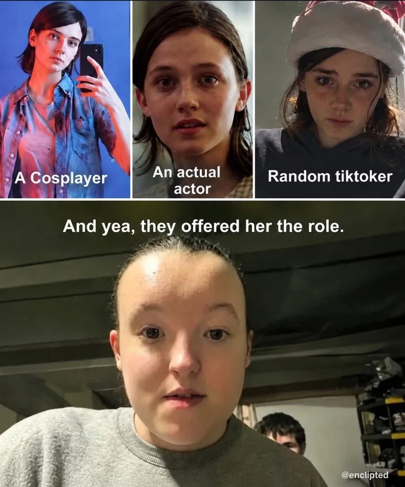
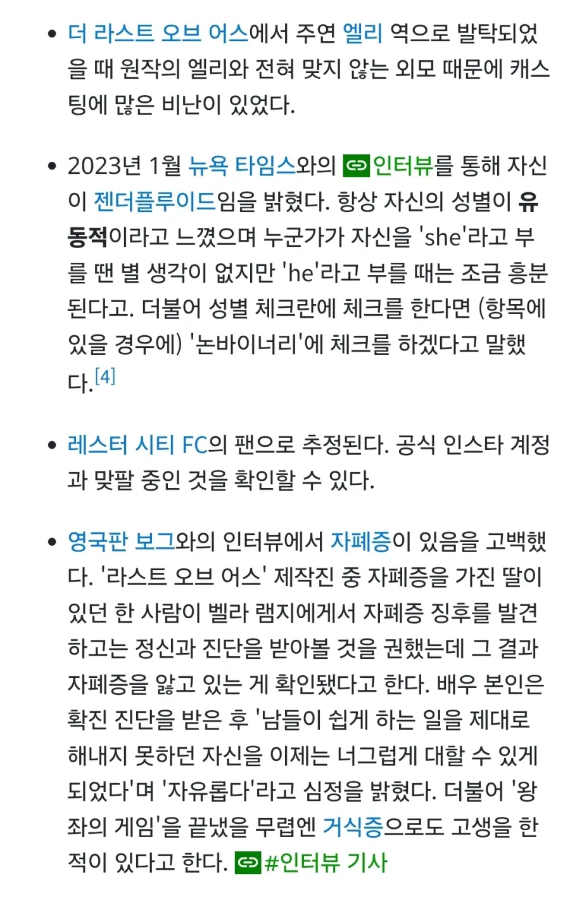

라스트 오브 어스 실사 시리즈에서
주인공 엘리 역을 맡은 벨라 램지
연기력과 별개로 원본 캐릭터와 너무 어울리지 않는 외모때문에 안티가 많다고 함..
근데 아니 ㅅㅂ 이건 쫌;;;


라스트 오브 어스 실사 시리즈에서
주인공 엘리 역을 맡은 벨라 램지
연기력과 별개로 원본 캐릭터와 너무 어울리지 않는 외모때문에 안티가 많다고 함..
근데 아니 ㅅㅂ 이건 쫌;;;
그 메타ceo? 당ㅁ앗너
씨발 랩틸리언의 습격이다!
꺼드럭만 왤케 혐오스럽지
시즌1에는 연기 ㅈㄴ 잘했음
시즌2는 보긴 해야하는데
본사람이 있다는게 놀랍다
아저씨들 키스 갈기는거보고 바로 껏는데
근데 좆같은 부분 넘기고보면 배우가 연기를 잘한다는게 눈에보임
나름 배우가 철학을 가지고 연기하고있음
생긴게 배우에 적절하지 않아
호감은 아니여도 불쾌감이 없어야하는데 저얼굴은 보고 있으면 기분 나쁨
다운증후근 처럼 생긴 병@신을 왜 쓰는건지 이해가 안된다.
라오어 시즌 1은 재밌게 봄. 저 배우왕겜 아기 곰 영주 시절에는 귀여웠음
인간을 닮으려고 시도된 무언가
이 이상으로 저 배우를 표현할 단어가 없음
감자 깎아서 눈코입 붙여놓은 것 같음
저렇게 태어나고싶은게 아니었을텐데 댓글매섭네
캐스팅한 제작진을 욕하는게 맞지 않겠냐 왜 배우 욕을 하지
어렸을땐 귀여웠는데
게이머들 개무시하는 꼬라지보면 화나긴해
부캉이 닮았네..
순수체급
딱히 연기 존나 잘한다는것도 공감안되는데 연기를 존나 잘한다는건 외모가 생각이 안날정도로 잘해야 의미있는거 아니냐
왕겜때는 귀여웠던거같은데...
다운증후군
저커버그 인 줄
일부러 못생긴 애 고른거 같음
꺼드락만 이새기 게이머들이 엘리에게 애정을 느끼는거 자체를 혐오하고 있는거 같은 느낌을 받아서
2 내용만 봐도 엘리를 개같이 굴리고 병신 만들어 놓는데 주력하고 있음